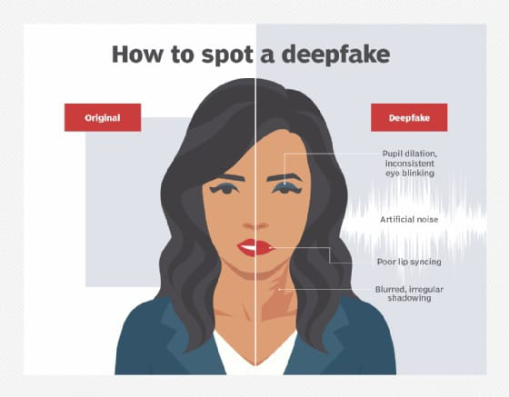

What are Deepfakes and AI-Generated Content?
Deepfakes are synthetic media where AI is used to create highly realistic images, videos, or audio that imitate real people. By leveraging advanced machine learning techniques like neural networks, deepfakes can manipulate or fabricate faces, voices, and expressions with increasing accuracy. AI-generated content also includes other forms of automated media creation, from news articles to art and videos, using algorithms trained on large datasets.
Why are Deepfakes and AI-Generated Content Concerning?
- Misinformation and Disinformation: Deepfakes can spread false information that appears real, which may be used for political manipulation, causing social unrest or damaging reputations through defamation.
- Damage to Trust: As deepfakes blur the line between reality and fabrication, they can lead to growing skepticism about legitimate content, eroding trust in media and institutions.
- Cybercrime: Deepfakes have been exploited for fraudulent activities, such as impersonating individuals to steal money or engage in identity theft.
- Reputation Damage: Falsely depicting celebrities, politicians, or private individuals in compromising situations can cause serious harm to personal and professional reputations.

Ways to Detect Deepfakes and AI-Generated Content

- Visual Irregularities: Look for unnatural facial movements, blinking patterns, or mismatched lighting that can give away manipulations.
- Audio Mismatches: AI-generated audio may have abnormal pauses, mismatched lip movements, or fluctuating speech patterns.
- Metadata Examination: Checking the file’s metadata or using verification tools can help identify whether a media file has been altered.
- Unrealistic Content: Be cautious with content that seems too shocking or inconsistent with known facts.
- Verification Tools: Use AI-driven tools like deepfake detection software to cross-check suspicious content.
Tools to detect deepfake images:
Intel's FakeCatcherMicrosoft Video AI Authenticator
The Impact of Deepfakes and AI-Generated Content
- Political Manipulation: Deepfakes could be weaponized to create fake speeches or actions by political figures, influencing elections or diplomacy.
- Privacy Invasion: Deepfakes have been used to generate non-consensual adult content, violating personal privacy and causing emotional harm.
- Legal and Financial Consequences: Victims of deepfakes may face legal battles or financial losses to restore their reputations or counteract fraud.
Risks of Not Addressing Deepfakes
- Increased Misinformation: Without robust detection, society may be unable to trust visual media, leading to widespread misinformation.
- Loss of Trust in Media: The potential for manipulating reality could result in distrust of legitimate content, harming media institutions and public communication.
- Escalation of Cybercrime: Deepfakes could enhance cybercriminals' ability to impersonate individuals, escalating fraud and identity theft.
Real Life Incident
How to Combat Deepfakes
- Education and Awareness: Public awareness campaigns about the dangers of deepfakes can help users recognize and report suspicious content.
- Technology Solutions: Governments and companies are investing in deepfake detection tools, AI authentication software, and stricter content verification systems.
- Policy and Regulation: Policymakers are considering stricter regulations around the creation and distribution of deepfakes, especially in political and criminal contexts.
By implementing these solutions and staying vigilant, we can mitigate the harmful impact of deepfakes and AI-generated content on society.